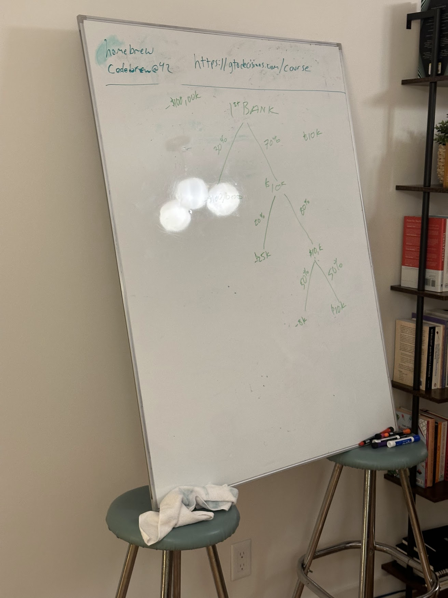

#1: Expected Value
Intros
In the 1st session we started with some intros. Some things people mentioned that they want to get from the course:
- Quick math on the fly
- Apply to trading and improve math
- Meet interesting people
- Thinking in bets applied to real life
- Meet cool people
- Better decision making
- How to teach these ideas
Expected Value Examples
We went through a few basic expected value examples to get the hang of it.
Rain and Umbrellas
How much would you pay to have an umbrella if it was raining and you didn’t already have one?
How much would you pay to not have to carry an umbrella if there was no rain and you were already carrying one?
These are the answers from the class:
| Rain and No Umbrella | No Rain and Carrying Umbrella |
|---|---|
| $10 | $0 |
| $20 | $1 |
| $5 | $2 |
| $5 | $1 |
| $7 | $3 |
| $10 | $10 |
| $10 | $5 |
| $20 | $5 |
| $3 | $3 |
| $25 | $10 |
Rain and No Umbrella average: $115/10 = $11.50
No Rain and Umbrella average: $40/10 = $4.00
From here we ask what is the breakeven percentage chance of rain that this average person should choose to carry vs. not carry an umbrella?
\[ \begin{equation} \begin{split} 11.5*P(\text{rain}) &= 4*P(\text{no rain}) && \Rightarrow \text{Let } P(\text{rain}) = p \\ 11.5*p &= 4*(1-p) \\ 11.5*p &= 4 - 4*p \\ 15.5*p &= 4 \\ p &= .258 \\ &= 25.8\% \end{split} \end{equation} \]
Therefore if it’s more than 25.8% probable to rain, this person should take an umbrella, and if less then 25.8% then they should leave it at home.
Poker
Next we looked at this poker hand:
What is the probability of winning the hand as the player with the 3♥4♥?
We see 8 total cards (our 2, opponent 2, and board 4). We need a heart of which there are 13 in the deck, but 4 already out (2 in our hand, 2 on the board).
Therefore the odds of hitting our heart are 9/44 = 0.2 (rounding).
Assume that the pot is currently $120.
What all-in bet from our opponent can we profitably call?
We know that a tiny bet of $1 will definitely give us the correct odds of calling. We know that a huge bet of $10,000 will definitely not give us the correct odds of calling.
We can calculate this mathematically. Let \(b\) be the opponent’s bet size that we have to call.
Total pot if we call = \(120 + b + b\).
Our equity of this pot is \(0.2\).
Therefore we breakeven when \(b = 0.2*(120 + 2b)\).
\[ \begin{equation} \begin{split} b &= 24 + 0.4b \\ 0.6b &= 24 \\ b &= 40 \end{split} \end{equation} \]
Therefore when the bet size is 40 we are indifferent to calling and folding. When it’s more than 40, we don’t have sufficient odds to call and should fold. When it’s less than 40, we have profitable odds to call and should call.
Note that we make the call even when we are unlikely to win! This is because we’re making the decision based on the probabilities.
Basketball Shots
Group Discussion
We talked about how these EV examples are relatively straightforward, but there are many factors that are not always easily quantifiable. There are also cases where our preferences (utility functions) are not aligned with the $EV. For example, if offered a coinflip for $100m vs. a free $40m, you’d probably need to be very rich or very risk-seeking to prefer the flip.
Other examples:
- Insurance
- Loss aversion (losing $1000 worse than winning $1000)
- Value of time
- Opportunity cost
- Something that’s -EV now but can open up a +EV opportunity later
- Moral issues
- Stress avoidance
We split into groups where teams made up example scenarios that were less straightforward.
Robbing a Bank
What if you need to rob a bank to pay for your dog’s surgery? You might be thinking “There are probably better options”. But let’s check the EV just to be sure:

Here we see that with 30% probability you immediately go to jail, which is worth -$100k.
With 70% probability, you successfully rob the bank for $10k.
But then once you successfully rob the bank, apparently the strategy is to rob another one. This works 80% of the time for another $10k. And if it fails, your loss is -$125k (only marginally worse than getting caught the first time). (Note that the tree diagram shows -$25k, but meant this in addition to the original possible loss.)
Finally, if you succeded twice, you give it one last try, but this time is only 50% successful for another $10k and risks loss of -$133k.
So what’s the EV of success?
\(0.7*0.8*0.5 = 0.28\) you will get $30k, for an EV of \(\$30*.28 = 8.4k\)
0.28 you get 30k Worth $8400 EV
0.3 you get -100k = -30k
.14 you get -125k = -17.5k
.28 you get -133k = -37.24k
-84.74k
+8.4k
Net -76.34k
28% +$30k 72% in jail
Turning Back on Everest
Picking a Job
Fun Games
Birthday Order
Birthday Sum
Word Modal Length
Word Most Common Letter
2/3 Game
Poker Games
We want to run this on Sundays. We’ll send out a message soon about scheduling and more info. We’ll probably do an online game on:
- Sun Sep 29
- Sun Oct 6
- Sun Oct 13
Then a final in person game on:
- Mon Oct 14 after the final class